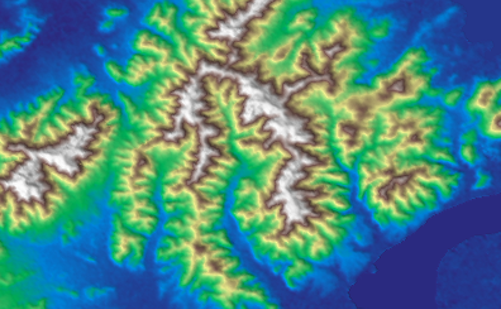

localhost:8000 · 梅家坞茶园微气候智能体

云栖竹径 · 3/27 开采
梅家坞北坡 · 4/3 开采
梅家坞一垄茶山
未来 72 小时逐小时预报
不是一条线是一个区间
同一片山两处茶园
P10 – P90 · 80% 置信区间
同一个页面 · 实时数据
农户问,助手答 · 回复用的是上面那条线的数据
模型输出 · 72h 逐小时 P50 与 P10–P90 区间
开采期差 7 天 · 春季霜冻小时差 526 小时(6 年累计)
未来 72h · 无霜冻风险
ERA5-Land 再分析 · 全国茶园地图 2022 · Open-Meteo 实时
LightGBM 分位数回归 · 30m 微地形降尺度 · AI4Climate